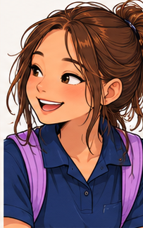
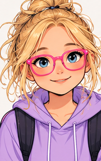

🐴 Indie's Social Adventure
Joining in
Lesson 2: Joining In 🌟
Taylor is talking about horses. Indie would like to join in. What could she do?


Indie notices Taylor talking about horses.
How could Indie join in?
There are different ways to join a conversation. Pick one to explore.
You can pause, replay, or choose again. This is a prototype of independently moving heads and bodies, not yet a full cartoon.
What might Taylor be thinking? 🔎
Look at her face, words and body language. They give clues, but we cannot know exactly how someone feels just by looking.
How might Indie feel about joining in? 💗
Indie might feel different things in different situations. More than one answer could fit.
Remember: You can listen first, join with a short question, or decide to wait. Eye contact is not required.
🏅
Conversation Explorer!
You explored ways to join a conversation and noticed feelings. That is worth celebrating!
Your Conversation Explorer badge celebrates curiosity, not one perfect answer.